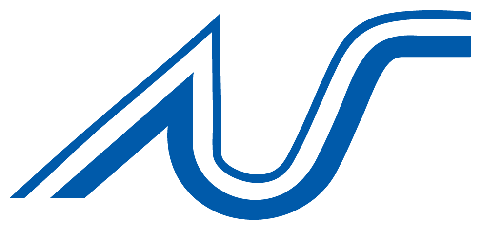

Como usar: este arquivo já está no formato A4. Para imprimir ou gerar PDF, abra o HTML no navegador e use Ctrl+P (ou Cmd+P) com margens em "nenhuma" e "imprimir fundos" ligado. Aqui na tela você pode selecionar qualquer trecho e deixar comentário.
Norte Sul Hidrotecnologia · Metropolitana Ambiental · 2026
Manutenção de redes de drenagem e esgoto, videoinspeção, reabilitação de tubulações sem abrir vala e obras de saneamento para prefeituras, autarquias e companhias de água.
Sede
Hortolândia, SP
Região Metropolitana de Campinas
Unidades
São Paulo, SP
Atendimento à capital e RMSP
Contato
comercial@nortesultec.com.br
nortesultec.com.br

SumárioNorte Sul + Metropolitana Ambiental
A Norte Sul Hidrotecnologia e Comércio atua em saneamento desde 22 de junho de 1990, na manutenção de sistemas de drenagem de águas pluviais, esgotamento sanitário e distribuição de água.
Com o tempo, a atuação cresceu da limpeza para o ciclo completo: zeladoria, cadastro, inspeção, diagnóstico e gestão técnico-operacional dos sistemas.
A Metropolitana Ambiental é a empresa aliada, focada em tecnologias não destrutivas. As duas operam integradas, somando equipes, frota e tecnologia. Para o cliente, um único interlocutor, do diagnóstico à entrega da rede recuperada.
Manutenção e operação de redes: limpeza mecanizada, videoinspeção, cadastro, gestão de O&M e emergências. A frota de hidrojato, sucção e reciclador é dela.
Tecnologias não destrutivas: reabilitação por CIPP-UV, obras com o mínimo de impacto na cidade e redução de perdas de água. Entra quando limpar não basta.
Linha do tempo
ABRATT
A Norte Sul é associada à Associação Brasileira de Tecnologia Não Destrutiva, entidade que reúne as empresas que aplicam métodos não destrutivos em redes de infraestrutura no país.
Missão
Prestar soluções que atendam ou superem as necessidades e expectativas dos clientes e o bem-estar da população, por meio da melhoria contínua na operação da infraestrutura, aplicando as tecnologias mais adequadas de forma socioeconômica e ambientalmente sustentável.
Para quem trabalhamos
Manutenção de microdrenagem, zeladoria de bocas de lobo, galerias, córregos e canais.
Redes de esgoto e água: inspeção, desobstrução, reabilitação por MND e apoio técnico.
Operação e manutenção de sistemas próprios, com relatórios e indicadores.
Inspeção e cadastro mostram o problema real antes de qualquer obra. Ninguém abre rua por palpite.
Preferência por métodos não destrutivos e por equipamentos que trabalham de dentro do poço de visita, sem vala e sem desvio de trânsito.
O caminhão reciclador reutiliza a água do próprio sistema durante a limpeza, poupando água potável.
Vídeos, laudos, relatórios fotográficos e planilhas de medição acompanham cada serviço e sustentam a fiscalização.
Desidratação, transporte e destinação dos resíduos retirados das redes em aterro licenciado.
Equipes treinadas em espaço confinado e sinalização viária, com EPI e procedimentos por tipo de serviço.
Diagnóstico antes, execução bem feita, registro depois. Retrabalho custa caro para o cliente e para a cidade.
Morador, comerciante, motorista. A obra que ninguém percebe é a obra bem feita.
Equipamento novo entra na frota quando reduz água, transtorno ou risco. Não por moda.
Cada frente pode ser contratada separadamente ou dentro de um programa de manutenção contínua. As páginas seguintes detalham cada uma.
Limpeza mecanizada de galerias, bocas de lobo, poços de visita, ramais, córregos e canais, com hidrojato, sucção e caminhão reciclador. Preventiva antes da chuva ou corretiva no ponto que alaga. Inclui desidratação e destinação do resíduo.
Páginas 06 e 07
Desobstrução e limpeza de redes coletoras, ramais prediais, poços de visita e elevatórias. Gordura, raízes e areia saem com hidrojato. Onde o caminhão não passa, entra o kit compacto sobre motocicleta.
Páginas 08 e 09
Robô com câmera percorre até 120 m de rede por poço de visita e grava metragem, declividade e o tamanho de cada defeito. Sai um laudo que diz o que limpar, o que reabilitar e o que substituir.
Páginas 10 e 11
Um liner de fibra de vidro entra no tubo antigo, é inflado e curado por luz ultravioleta. Vira um tubo estrutural novo sem abrir vala, sem quebrar asfalto e com a rua liberada no mesmo dia.
Páginas 12 e 13
Quando o laudo mostra colapso ou tubo subdimensionado, a gente executa a obra: reparo pontual de redes, construção e reforma de poços de visita, caixas e dispositivos, com recomposição do pavimento.
Página 14
Operação e manutenção contínua de sistemas de esgoto e drenagem: rotas por bacia, central de ocorrências, equipe dedicada, indicadores mensais e relatório pronto para o fiscal do contrato.
Página 15
Cadastro de redes, diagnóstico das causas de alagamento e refluxo, prognóstico de pontos críticos com ordem de prioridade e apoio técnico a planos de saneamento e de segurança da água.
Página 16
Enchente, extravasamento de esgoto, colapso de galeria e obstrução em via pública. Equipe de sobreaviso, equipamento de alto desempenho e registro completo para a correção definitiva.
Página 17
Frente 01
Limpeza mecanizada de galerias, bocas de lobo, poços de visita, ramais, córregos e canais. Serviço preventivo, antes do período de chuvas, ou corretivo, em pontos com alagamento recorrente.
Hidrojato solta o material, sucção a vácuo retira pelo poço de visita. Qualquer diâmetro, sem abrir a via.
Remoção de resíduos, areia e folhas. Desobstrução do ramal até a galeria.
Limpeza com verificação de degraus, tampões e condições de acesso.
Desassoreamento de córregos, canais e travessias, com retirada e transporte do material.
Material desidratado, pesado e destinado a aterro licenciado, com controle documental.
Rotas e frequências por bairro ou bacia, priorizando os pontos críticos de alagamento.
Tudo acontece pelo poço de visita. A rua fica aberta ao trânsito enquanto a galeria é limpa.
Destaque
Equipamento de hidrossucção que limpa galerias, ramais e bocas de lobo reaproveitando a água do próprio sistema. Um processo inteligente de separação e filtragem retira os sólidos durante a operação e devolve a água limpa ao jato. O mesmo volume de água circula ao longo de todo o turno.
Como funciona a operação
A mesma água circula o turno inteiro. Só o sólido sai do ciclo.
Quando o trecho precisa de laudo, entra a videoinspeção (página 10). Quando precisa de reabilitação, entra o CIPP-UV (página 12).
Frente 02
Desobstrução, limpeza e conservação de redes coletoras, ramais prediais, poços de visita e estações elevatórias, com equipamentos que vão do caminhão hidrojato ao kit compacto sobre motocicleta.
Hidrojato remove gordura, raízes e areia de coletores e interceptores.
Em vielas e ladeiras, com o kit sobre motocicleta. Sem mobilizar caminhão.
Sucção a vácuo, remoção de lodo e verificação de tampões.
Olhar dentro do tubo antes e depois, pelo poço de visita.
Extravasamento, refluxo e obstrução em rede pública, programado ou emergencial.
Rotas periódicas nos trechos com histórico, dentro de contratos de O&M.
Do ramal da casa ao coletor da rua, cada trecho tem o equipamento certo para o acesso que ele permite.
Destaque
Equipamento compacto de desobstrução de ramais de esgoto montado sobre uma motocicleta. Chega rápido, entra em rua sem saída, não bloqueia a via e resolve a ocorrência sem mobilizar caminhão. Ideal para zeladoria de bairros densos e para contratos com alto volume de chamados de ramal.
Câmera periscópica
Usada para inspeção visual de tubulações enterradas a partir do poço de visita. Permite ver o interior do tubo e identificar obstruções, vazamentos, fissuras, deslocamentos e danos na parede da tubulação sem escavar e sem mobilizar o robô de videoinspeção. É o primeiro olhar antes de decidir a intervenção.
Acúmulo nas paredes do tubo em trechos próximos a comércio e restaurantes. Removida com hidrojato e bico rotativo.
Entram pelas juntas e crescem dentro da rede. Cortadas com bico específico e registradas para reabilitação futura.
Baixa declividade ou infiltração de solo. Sucção a vácuo e verificação da junta que permitiu a entrada.
Lançamentos indevidos na rede. Retirados mecanicamente pelo poço de visita.
Tubo quebrado ou abatido. Identificado no vídeo e encaminhado para reparo pontual ou CIPP-UV.
Como definimos a frequência da preventiva
Histórico. Trechos com chamados repetidos entram em rota com intervalo menor.
Traçado. Baixa declividade e diâmetro pequeno acumulam mais e pedem visita mais frequente.
Entorno. Comércio e restaurantes geram gordura; áreas arborizadas geram raízes.
Frente 03
Inspeção de redes de esgoto e drenagem por circuito fechado de TV, com robô. Mostra a situação estrutural e hidráulica de cada trecho e gera um laudo com recomendação: limpar, reabilitar ou substituir.
Percorre a tubulação por controle remoto, sem que o operador precise entrar na rede.
Giro de 360°, avanço e recuo, luz e foco, tudo de dentro do veículo.
Metragem gravada no vídeo. Até 120 m a partir de um único poço de visita.
Revela contra-declives e abatimentos ao longo do trecho.
Mede furos, trincas e juntas deslocadas.
O que o laudo entrega
Ninguém entra na rede. O vídeo sai com metragem, declividade e o tamanho de cada defeito.
Recebimento de obra. Confirma que a rede foi executada como projetada antes de aceitar a entrega.
Diagnóstico de tubulações cerâmicas, de concreto ou ferro com décadas de uso, para planejar reabilitação.
Alagamentos e refluxos recorrentes. A câmera mostra se a causa é assoreamento, colapso ou ligação irregular.
Levantamento de traçado, diâmetro, material e estado de conservação para compor o cadastro técnico.
Comprovação da limpeza ou reabilitação executada, com vídeo antes e depois.
Identificação de ligações de esgoto em galerias pluviais e vice-versa, com localização por metragem.
Tipos de defeito que o vídeo revela
Trinca e fratura longitudinal ou circunferencial.
Colapso e abatimento de trecho.
Infiltração por junta ou parede.
Junta deslocada ou aberta.
Raízes e intrusões.
Sedimento, gordura e obstrução.
Contra-declive e retenção de água.
Ligação irregular ou ramal saliente.
Frente 04 · CIPP-UV
O CIPP-UV recupera tubulações antigas por dentro: um liner de resina com fibra de vidro é inserido no tubo, inflado e curado por luz ultravioleta. O resultado é um tubo estrutural novo, sem escavação e sem intervenção no asfalto.
De poço de visita a poço de visita. Nada de vala, desvio ou recomposição.
Cura em minutos por trecho. A rede volta a operar no mesmo dia.
Liner 100% estrutural: sela trincas, infiltrações e juntas abertas.
Redes cerâmicas, de concreto ou ferro ganham décadas de vida.
Resultado: um tubo estrutural novo, moldado ao antigo, com acesso só pelos poços de visita.
Caso · SANASA Campinas
Renovação de três trechos de tubulação cerâmica de 150 mm em Campinas, SP, a serviço da SANASA, pelo método CIPP-UV. A rede antiga recebeu o novo tubo estrutural sem nenhuma abertura de vala, recuperando eficiência hidráulica e vida útil da infraestrutura existente.
Onde o CIPP-UV se aplica
Outros métodos não destrutivos
Além do CIPP-UV, a Metropolitana Ambiental avalia para cada caso o reparo pontual por dentro do tubo e as demais técnicas de MND disponíveis no mercado, sempre partindo do laudo de videoinspeção.
Muito pouco. A parede lisa do liner compensa: a rede reabilitada costuma escoar melhor do que a antiga, cheia de juntas e incrustações.
Só o entorno dos dois poços de visita, por algumas horas. O trecho entre eles continua com trânsito normal.
Ficam fechadas durante a cura e são reabertas em seguida por um robô cortador, guiado pelo vídeo.
Frente 05
Execução e recuperação de trechos de rede, poços de visita, caixas e dispositivos de drenagem. Sempre que possível por método não destrutivo. Quando a escavação é necessária, com sinalização, escoramento e recomposição do pavimento.
Substituição de trechos rompidos de galerias e coletores identificados na videoinspeção, com recomposição do pavimento.
Construção, reforma e elevação de poços de visita, caixas de passagem, bocas de lobo e bocas de leão. Troca de tampões e grelhas.
Implantação de novos trechos de drenagem e esgoto, ligações e ramais, conforme projeto e especificação do cliente.
Sarjetas, sarjetões, dissipadores e travessias. Recuperação de canais e taludes em córregos.
Apoio a serviços em redes de distribuição de água, com foco em métodos que reduzem perdas.
Fechamento de vala, compactação e recomposição asfáltica ou de calçada nas obras que exigem escavação.
Quando usamos MND e quando fazemos obra
O laudo de videoinspeção mostra o tipo e a extensão do defeito. Trinca, infiltração e junta aberta em tubo íntegro vão para CIPP-UV. Colapso total, tubo subdimensionado ou traçado errado vão para obra. Em muitos casos o resultado é um pacote: obra pontual no trecho colapsado e CIPP-UV no restante.
Frente 06
Contratos de operação e manutenção contínua de sistemas de esgoto e drenagem, com equipe dedicada, rotas planejadas, atendimento a ocorrências, indicadores e relatórios mensais.
Rotas por bacia ou setor, com frequência definida pelo histórico.
Triagem e despacho de chamados, com prazo por tipo de ocorrência.
Operadores, encarregado e engenheiro alocados ao contrato.
Metros limpos, chamados, tempo de resposta, pontos resolvidos.
Medição mensal com fotos, metragens e mapas, pronta para o fiscal.
Manifestos, destinação e conformidade ambiental.
Manutenção preventiva e corretiva
A preventiva segue o plano. A corretiva atende o chamado. O contrato de O&M equilibra as duas e, com o tempo, reduz a corretiva.
Um contrato de O&M é um ciclo que se repete. Cada volta deixa a rede mais previsível.
Frente 07
Serviços técnicos que transformam uma rede desconhecida em um plano de ação com prioridades: cadastro, diagnóstico das causas, prognóstico de pontos críticos e apoio a planos de saneamento.
Levantamento de traçado, diâmetros, materiais, profundidades, poços de visita e estado de conservação, com base em inspeção de campo e videoinspeção. Entregue em planilha, mapa e, quando solicitado, em base georreferenciada.
Análise das anomalias estruturais e hidráulicas de cada trecho e identificação das causas de alagamento, refluxo e infiltração.
Classificação de risco e priorização de investimento: o que limpar, o que reabilitar e o que substituir, e em que ordem.
Suporte a planos de segurança da água, planos de drenagem e programas de saneamento junto a autarquias e concessionárias, como no apoio ao Plano de Segurança da Água do SEMAE de Mogi das Cruzes.
Fabricação e adaptação de máquinas e acessórios para saneamento, ajustados à realidade de cada operação.
Entregáveis típicos
Por que contratar
Um cadastro bem feito reduz o custo das licitações seguintes, porque o edital sai com quantidades reais. Um prognóstico bem feito evita reabilitar trecho bom e deixar o ruim para depois. E um diagnóstico bem feito resolve o alagamento na causa, não no sintoma.
Frente 08
Atendimento emergencial em situações de enchente, extravasamento de esgoto, colapso de galeria e obstrução em via pública, com equipamentos de alto desempenho e equipes prontas para mobilização rápida.
Desobstrução imediata de bocas de lobo e galerias no ponto crítico, sucção de água acumulada e limpeza do trecho após a chuva.
Desobstrução da rede coletora ou do ramal, limpeza da via e registro da causa para correção definitiva.
Isolamento da área, avaliação por vídeo, limpeza do trecho e encaminhamento para reparo ou CIPP-UV.
Retirada de entulho e objetos de bocas de lobo, caixas e travessias que bloqueiam o escoamento.
Alerta de chuva
Com alerta meteorológico, as rotas preventivas são antecipadas para os pontos históricos e as equipes de sobreaviso ficam posicionadas antes da chuva chegar. Quem já limpou não precisa correr.
Como funciona o acionamento
Plano de contingência para o período chuvoso
Em contratos de O&M, montamos com o cliente um plano para o verão: mapa dos pontos históricos de alagamento, limpeza preventiva antecipada, equipes de sobreaviso e equipamentos posicionados nas regiões de maior risco.
Equipamentos próprios para cada tipo de serviço
Limpa galerias, ramais e bocas de lobo reutilizando a água do próprio sistema. Separa os sólidos durante a operação e mantém o mesmo volume de água circulando o turno inteiro.
Alta pressão para soltar o material aderido às paredes do tubo e sucção a vácuo para retirar sedimentos, areia e entulho de galerias, poços de visita e elevatórias.
Desobstrução de ramais de esgoto em ruas estreitas, vielas e ladeiras, sem bloquear a via e sem mobilizar caminhão.
Câmera com giro de 360°, carretel com registro de distância para trechos de até 120 m, sensor de inclinação e sensor laser. Operado da cabine do veículo.
Inspeção visual rápida a partir do poço de visita para identificar obstruções, fissuras, deslocamentos e vazamentos antes de decidir a intervenção.
Conjunto para reabilitação CIPP-UV: inserção do liner, inflagem, cura por ultravioleta e reabertura de ramais por robô cortador.
Separação de água e sólidos do material retirado das redes, reduzindo volume e custo de transporte até o aterro.
Máquinas, bicos e acessórios para saneamento desenvolvidos ou adaptados pela própria empresa para a realidade de cada contrato.
Reuso de água, destinação correta de resíduos, obras sem escavação e equipes protegidas. Práticas aplicadas em todas as frentes de serviço.
O caminhão reciclador filtra e reaproveita a água do próprio sistema, reduzindo o consumo de água potável em cada turno de trabalho.
Desidratação, pesagem, transporte com manifesto e destinação em aterro licenciado. O cliente recebe a documentação.
O método não destrutivo elimina bota-fora, recomposição asfáltica e emissões de obra em toda a extensão do trecho.
Redes reabilitadas param de infiltrar e de vazar. Menos água tratada perdida, menos esgoto no solo e nos córregos.
Trabalho em poços de visita e galerias segue procedimento de espaço confinado: medição de gases, ventilação, vigia e resgate.
Isolamento e sinalização da área de trabalho conforme as normas de trânsito, com cones, placas e sinalizadores.
Equipamentos de proteção individual e procedimento operacional padrão por tipo de serviço, com registro de treinamento.
Operadores capacitados para os equipamentos da frota e reciclagem periódica dos treinamentos obrigatórios.
Para quem já trabalhamos
Órgãos públicos e companhias de saneamento do estado de São Paulo, atendidos por contrato direto ou licitação, com medição, relatório e fiscalização conforme as exigências do setor.
Município
São Paulo, SP · desde 2002
Manutenção do sistema de microdrenagem da capital: limpeza para recuperar a capacidade de captação e escoamento, conservação de bocas de lobo, ramais, poços de visita e galerias. Contrato de limpeza mecanizada do sistema de drenagem firmado em 2024.
Limpeza mecanizada de galerias e bocas de lobo
Cadastro e inspeção por CFTV de pontos de alagamento
Hidrojato, sucção e caminhão reciclador
Subprefeituras
Zona Leste de São Paulo, SP
Limpeza de galerias, córregos e canais e manutenção do sistema de drenagem, com desidratação e transporte de resíduos e atendimento emergencial em enchentes.
Córregos, canais e travessias
Desidratação e destinação de resíduos
Emergências em período de chuva
Companhia de saneamento
Campinas, SP
Reabilitação de trechos de rede de esgoto em tubulação cerâmica de 150 mm pelo método CIPP-UV, sem abertura de vala.
Liner curado por luz ultravioleta
Nenhuma intervenção no asfalto
Videoinspeção antes e depois
Autarquia
Mogi das Cruzes, SP
Apoio técnico ao desenvolvimento do Plano de Segurança da Água da autarquia, dentro da frente de serviços técnicos.
Plano de Segurança da Água
Diagnóstico e priorização
Equipe técnica dedicada
Atestados de capacidade técnica de cada contrato disponíveis sob solicitação.
Inspeção, limpeza, obra, reabilitação e gestão com a mesma equipe. Sem empurrar o problema para outro fornecedor.
Caminhão reciclador, robô de videoinspeção e CIPP-UV reduzem transtorno, água e tempo de obra.
Trinta e cinco anos atendendo prefeituras, autarquias e concessionárias, com medição e fiscalização.
Norte Sul e Metropolitana Ambiental somam frota, equipes e tecnologia. O cliente fala com um só responsável.
Parte da comunidade brasileira de tecnologia não destrutiva.
Habilitação
Equipe por contrato
Operadores treinados, encarregado de campo, engenheiro responsável e apoio administrativo para medições e relatórios. Toda a operação acompanha as normas de segurança do trabalho aplicáveis ao serviço.
Documentação sob solicitação
Envie o escopo, o edital ou a dúvida. Respondemos com uma proposta técnica e, se fizer sentido, uma visita de diagnóstico.
Sede · Hortolândia
Rua Oralinda Moraes Simões, 9
Chácaras Nova Boa Vista
Hortolândia, SP · CEP 13185-077
(19) 3281-3537
Unidades · São Paulo
Atendimento à capital e Região Metropolitana
(11) 2016-2862
WhatsApp (11) 94002-0943
comercial@nortesultec.com.br
Na web
nortesultec.com.br
Instagram @nortesulhidrotecnologia
Facebook /NorteSulHidrotecnologia